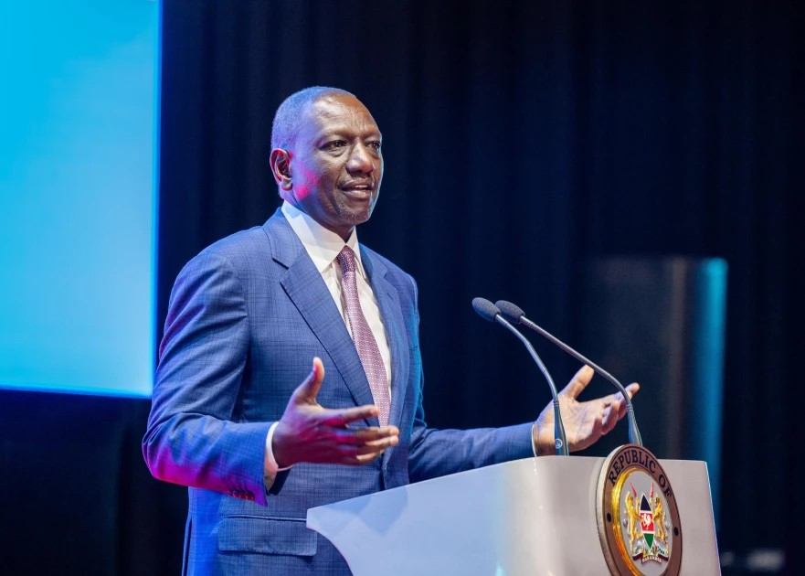

Ruto allocates 100M towards ending femicide
video source:kenya digital news
story by:Angella Tanui
listen to the article
President William Ruto has committed Ksh.100 million towards the Safe Home, Safe Space Campaign that seeks to end femicide cases across the country.
Speaking at State House after engaging in a meeting with women leaders, the president said that the campaign would entail 16 days of activism beginning November 25, 2024, to voice against gender-based violence.
He reiterated the government's commitment to supporting policies that will put an end to the vice, which has resurfaced in recent months.
President William Ruto has committed Ksh.100 million towards the Safe Home, Safe Space Campaign that seeks to end femicide cases across the country.
Speaking at State House after engaging in a meeting with women leaders, the president said that the campaign would entail 16 days of activism beginning November 25, 2024, to voice against gender-based violence.

He reiterated the government's commitment to supporting policies that will put an end to the vice, which has resurfaced in recent months.President William Ruto has committed Ksh.100 million towards the Safe Home, Safe Space Campaign that seeks to end femicide cases across the country.
Speaking at State House after engaging in a meeting with women leaders, the president said that the campaign would entail 16 days of activism beginning November 25, 2024, to voice against gender-based violence.
He reiterated the government's commitment to supporting policies that will put an end to the vice, which has resurfaced in recent months.
The head of state appealed to Kenyans to join the campaign and play a role by sensitising the community on gender based violence.
"I urge every Kenyan to join this movement. Parents have a crucial role. I say so as a parent of four girls myself. Be present and approachable to your children.
A strong family is the first line of defence against the dangers lurking in the society," the president pointed out.
LEAVE A COMMENT